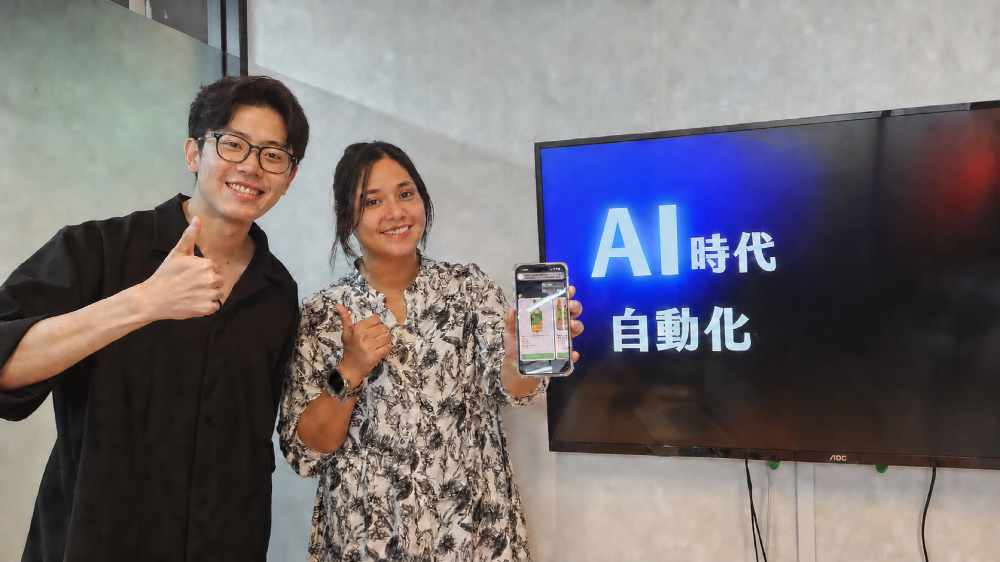
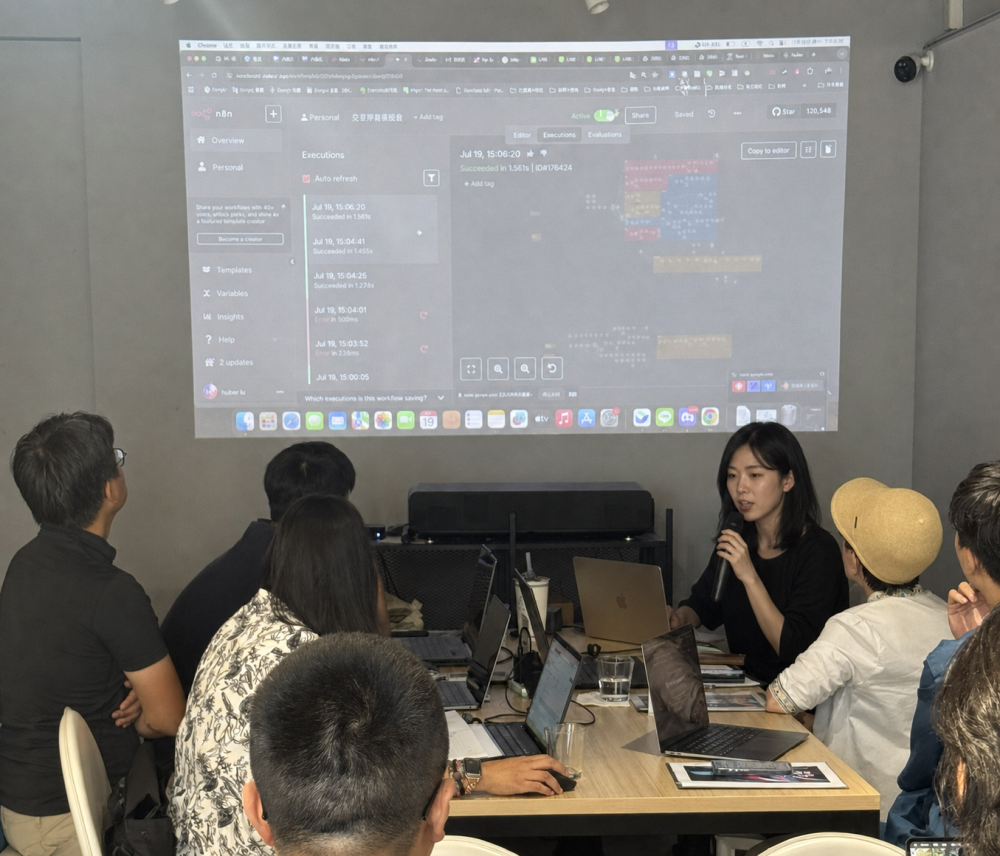
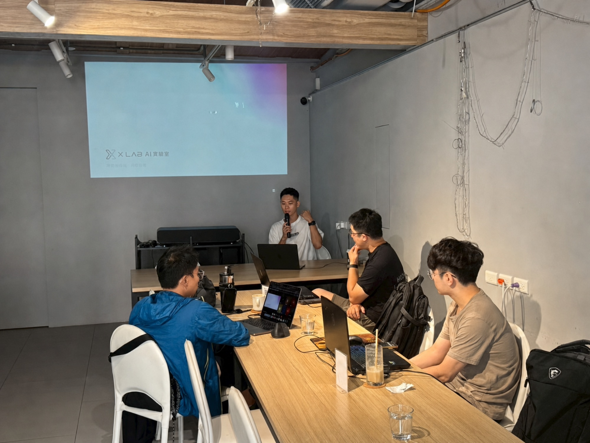
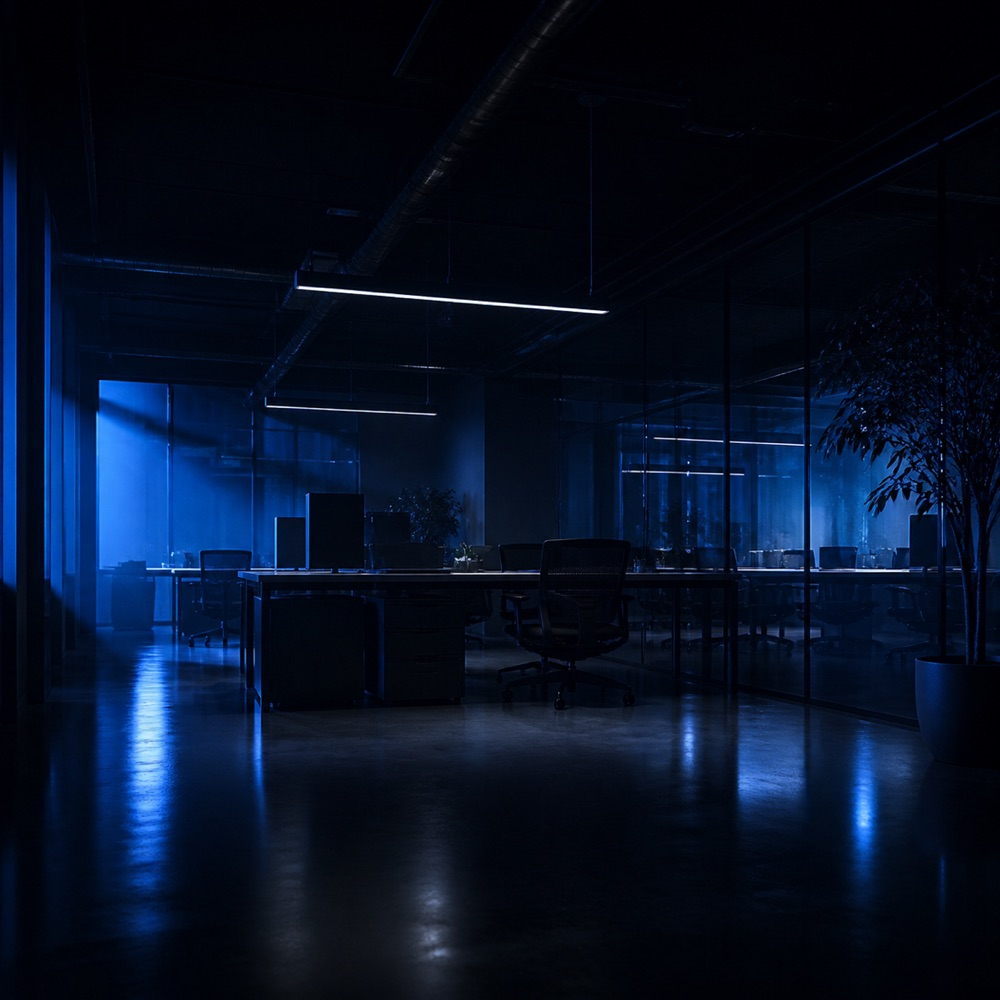

訓練營 01AI 自動化
n8n × AI 自動化實戰
零基礎也能開始
不會寫程式也能開始。用拖拉節點的方式打造專屬 AI 工具，接上你每天在用的通訊、文件與 AI 服務，做出自動客服、內容生成與專屬知識庫問答。
線上訓練營零基礎可入





我們的信念
XLab，相信 AI 是每個人都能駕馭的超能力。
XLab 的核心是訓練營：老師直接帶著你實戰演練，課後還有線上課程影片可以反覆看， 一路練到足以接案的程度。梯次以線上為主，也開實體場。 自 2025 年起，XLab 與 XPlatform 職能共學平台策略合作， 專為 AI 新手與轉職者打造面向未來的學習方案。
教學聯盟資源（XPlatform 共學計畫）
500+
專業業師
1,000+
議題講座
10+
知識領域
40萬+
學習會員
不管什麼科系、什麼職位，這是唯一公平的條件。差別只在於誰已經把重複的事交出去了。
過去需要人工處理的流程，只要你說得出步驟，就能交給 AI 接手，把雙手空下來做真正重要的事。
做筆記、做簡報、找工作，甚至投資理財與找房子——日常裡的重複動作，都能被自動化。
今年的熱門工具明年可能就換了。真正留得住的，是把問題拆成流程、交給機器去跑的思考方式。
「不用擔心自己會被 AI 取代，
AI 教父・黃仁勳
該擔心的是被那些懂得使用 AI 的人取代。」
實戰演練 × 課程影片 × 共學場域
老師開著螢幕帶你動手，課程影片可以回去重看，卡住有線上助教接。 帶隊的是業界專家與資深職人，講的是這個月還在用的做法。
從建立判斷力開始，到你親手做出一個能運轉的東西為止。
從觀念開始，而不是從工具開始。先把這個領域怎麼判斷、怎麼拆解問題講清楚， 你才不會把時間花在學一個下個月就被取代的軟體上。
在自己的電腦上建好可以動手的工作環境，並理解背後的運作邏輯。 這一段是講師陪你一起走的，卡住當場解決。
跟著課程實作，當堂跑出結果。不是看示範，是你自己的螢幕上真的有東西在動， 而且是照你的需求做出來的。
把課堂上做的東西整理成能展示的成果，並在結業時發表。 結束之後它還會繼續替你工作，也能直接拿去談下一份工作或下一個案子。
不是一疊筆記，是能用、能展示、能拿去接案的成果。
從零開始獨立設計並實作，不是跟著範例複製一次就忘。
結業發表的成果可以直接拿去談下一份工作或下一個案子。
重複、耗時的工作交給自動化，精力留給真正有價值的決策。
先進來看看這個場域怎麼運作。用得上什麼再往上加， 不必在還沒摸清楚之前就決定走多遠。
訓練營、共學社群與領域專家諮詢一次到位， 專案卡關、求職與接案的問題都有人接。
公開講座、實體工作坊、線上直播——從 AI 行銷、自動化投資到設計與職涯， 一場一場累積下來的現場。
AI × 自動化 × 工程、AI × 設計、自動化投資分析—— 每一個訓練營都由該領域的領航師資親自帶隊，用實作把你送到成果那一端。 單場講座、四到十二週的密集專案訓練營都有，梯次以線上為主，也開實體場。
零基礎也能開始
不會寫程式也能開始。用拖拉節點的方式打造專屬 AI 工具，接上你每天在用的通訊、文件與 AI 服務，做出自動客服、內容生成與專屬知識庫問答。
拖曳丟出 · 或使用 ← → 方向鍵